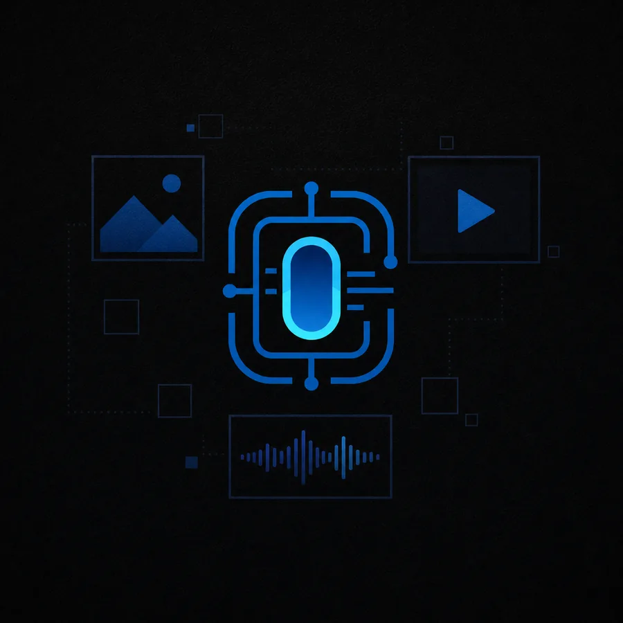

Brand website
Clear pages for your services, work, FAQs and contact flow—with basic technical SEO included.
- Content and page structure
- Responsive build and technical SEO
- Contact forms, analytics and launch setup
WEBSITES · AI · AUTOMATION
I design and build practical websites, AI sales and support assistants, and workflow systems for businesses that want fewer repetitive tasks and clearer operations.

Website, content, AI consultation flow and ongoing maintenance
WEBSITE / SYSTEM
01 · SERVICES
You do not need everything at once. Each service can work on its own and connect to the rest later.
Clear pages for your services, work, FAQs and contact flow—with basic technical SEO included.
A focused assistant that answers approved questions and guides customers to products, services or booking options.
Connect orders, inventory, email, forms, spreadsheets and existing tools for syncing, notifications and reports.
A practical admin view for searching, updating, filtering and exporting the information your team uses.
Extract requirements from text, match them against your catalogue, and calculate prices from rules your team can verify.
Starting prices are planning anchors for small, clearly scoped projects. Final pricing depends on content volume, data quality, integrations, testing and ongoing support.
Website scope: I can connect existing checkout, payment or booking services, but I do not currently build custom ecommerce or payment systems from scratch.
02 · SELECTED WORK
Each one was built around the information people use, the decisions they make and the follow-up the work requires.
LIVE BUSINESS · TAIWANFu Li Jie WoodworkBrand website, SEO, AI consultation and ongoing maintenance
Visit live site ↗
 OVERSEAS CLIENT PROJECTAI Quote AssistantRequirement extraction, catalogue matching and rule-based pricing
Open demo ↗
OVERSEAS CLIENT PROJECTAI Quote AssistantRequirement extraction, catalogue matching and rule-based pricing
Open demo ↗
 WORKING PROTOTYPEGuided Survey SystemConditional questions, searchable records, filters and exports
Open demo ↗
WORKING PROTOTYPEGuided Survey SystemConditional questions, searchable records, filters and exports
Open demo ↗

OWN PRODUCTAI Create a WorldAccounts, media processing, moderation, search and multiple APIs Visit platform ↗03 · PROTOTYPE / PRODUCTION
I use AI throughout development. I remain responsible for defining the scope, testing the result, launching it and resolving agreed issues after launch.
A prototype shows the main screen and path with test data. It is useful for learning, discussion and deciding whether the idea deserves a larger investment.
A production system has to work with real users and data, including the moments when information is missing, a service fails or the workflow changes.
04 · HOW WE WORK
Before work begins, you will know what is included, what needs your input and what happens after launch.
What customers ask, what your team repeats, and where information gets lost.
I turn the problem into pages, data, rules and integrations you can review.
You see a working version early. We refine real interactions instead of debating a document.
Before handoff, we decide what you can update and what I continue to maintain.
I am Kuan-Ming Chen, based in Taichung, Taiwan. I work directly with you on scoping, design, implementation, deployment and ongoing maintenance—without handoffs between sales and production.
If a request falls outside what I can deliver reliably or needs a specialist, I will say so before quoting instead of promising an unverified feature.
READY WHEN YOU ARE
I work with English clients entirely in writing. WhatsApp or email keeps every decision documented and lets me start straight from a written brief — so I don’t take phone or video calls in English.
Based in Taichung, Taiwan · Remote projects · Written communication in English